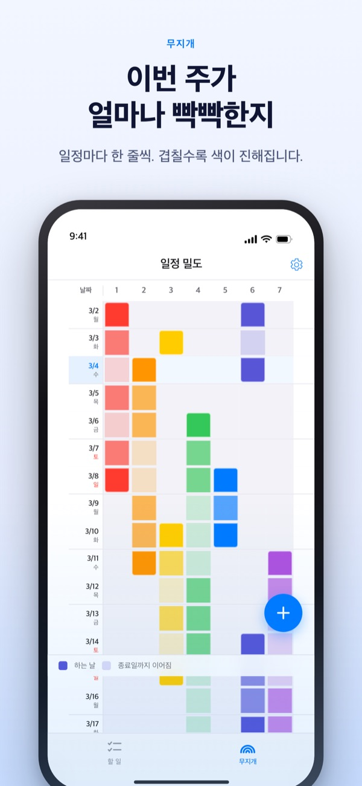
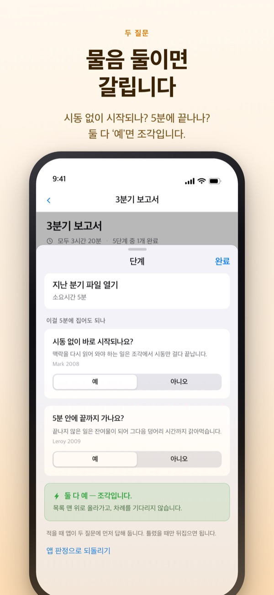
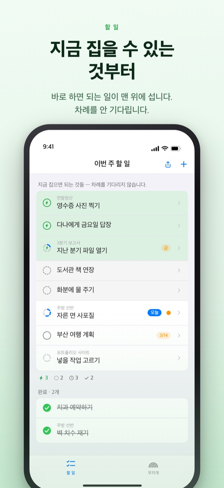
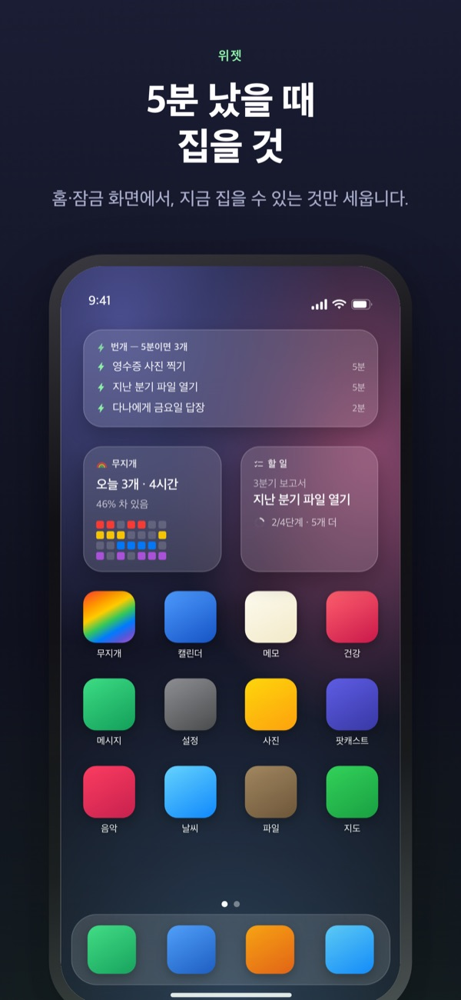

빡빡한 주는 미리 보고,
5분은 흘려보내지 않게
일이 겹칠수록 무지개의 색이 진해집니다. 큰 일은 단계로 쪼개 두면, 짬이 났을 때 바로 집을 단계가 맨 위에 서 있습니다.
무지개, 할 일 쪼개기, 타이머, 맥과 이어 쓰기는 무료입니다.

직접 갈라 보세요
‘3분기 보고서’를 다섯 단계로 쪼갰습니다. 단계를 고른 뒤 시간을 바꾸거나 두 물음의 답을 뒤집어 보세요. 둘 다 ‘예’인 단계만 5분에 집는 조각이 됩니다.
달력은 비어 보이는데 숨이 찬 주, 있지 않나요?
달력은 일정이 잡혔는지만 알려 줍니다. 마감 셋이 한 주에 몰린 건 그 주에 들어서고 나서야 알게 되고, 그 사이에 난 5분은 할 일 목록만 훑다가 지나갑니다. 욕망의 무지개는 한 주를 격자로 그려 겹친 만큼 색을 짙게 칠하고, 짬에 집을 일은 따로 골라 둡니다.
물음 둘이면 갈립니다
큰 일을 단계로 쪼개면 단계마다 두 가지를 묻습니다. 시동 없이 바로 시작되나요? 5분 안에 끝까지 가나요?
둘 다 ‘예’인 단계만 조각입니다. 답은 앱이 적은 말과 시간을 보고 먼저 적어 두고, 틀렸을 때만 뒤집으면 됩니다.

짬이 나면 맨 위만 보면 됩니다
할 일을 오른쪽으로 밀어 번개를 붙이면 차례를 건너뛰고 맨 위에 섭니다. 목록 전체를 읽지 않아도 지금 집을 것이 거기 있습니다.
단계끼리 기다리는지는 묶음마다 한 번만 정합니다. 순서대로면 남은 첫 단계가, 아무 순서면 지금 집을 수 있는 조각이 먼저 섭니다.

앱을 열지 않아도 보입니다
타이머는 일정이 끝나는 시각까지 세고, 다이나믹 아일랜드와 잠금 화면에서도 남은 시간이 보입니다.
홈·잠금 화면 위젯에는 지금 붙잡은 일, 5분에 집을 것, 이번 주 무지개가 뜹니다. (위젯은 Pro)

시작은 세 단계면 됩니다
- 1
일정을 긋습니다
시작하는 날의 빈칸을 길게 누르고 끝나는 날을 한 번 더 누르면 무지개에 한 줄이 생깁니다.
- 2
큰 일은 쪼갭니다
할 일을 눌러 단계를 적고 시간만 고르면, 두 물음의 답은 앱이 먼저 적어 둡니다.
- 3
짬이 나면 맨 위를 봅니다
조각과 번개 붙은 일이 차례를 기다리지 않고 맨 위에 모여 있습니다.
화면에서 만나는 말
- 진한 칸 · 옅은 칸
- 그 일에 실제로 손대는 날, 끝나는 날까지 남은 기간
- 한 줄에 칸이 가득
- 그날 동시에 굴리는 일이 많아 하나만 밀려도 하루가 밀리는 날
- 조각
- 두 물음에 모두 ‘예’. 5분이 나면 집는 단계
- 짧은 덩어리
- 시동은 필요 없지만 조각 안에는 안 끝나는 단계. 앉아서 한 번에 끝냅니다
- 덩어리
- 시동이 필요하거나 45분이 넘는 단계. 지켜 둔 시간에 둡니다
- 번개
- 내가 붙이는 ‘지금 바로’ 표시. 차례를 건너뛰고 맨 위에 섭니다
- 순서대로 · 아무 순서
- 단계끼리 기다리는지, 묶음마다 한 번 정합니다
- 회수 장부
- 한 주의 결산. 남은 일, 되찾은 시간, 숨 돌린 시간을 서로 더하지 않고 따로 적습니다
할 일의 시간은 아래에서 위로 쌓입니다. 큰 일의 시간은 단계 시간의 합입니다.
오늘을 사는 데 필요한 것은 무료입니다
무료
- 무지개(일정 밀도 격자)
- 할 일 단계 쪼개기와 두 물음
- 번개, 단계 순서
- 타이머(다이나믹 아일랜드 · 잠금 화면)
- 맥 앱 무지개 공방과 iCloud로 이어 쓰기
- 최근 2주의 회수 장부
무지개 Plus · 무지개 Pro
- Plus: 일정 통계, 2주보다 앞선 회수 장부
- Pro: Plus 전부와 홈·잠금 화면 위젯
- Pro: 캘린더에서 가져오기와 비추기
- Pro: 일정 공유(읽기 전용)
- Pro: 맥 무지개 공방 Pro도 함께 열림
각각 연간 구독 또는 한 번 결제하는 평생 이용권
값을 받는 것은 지나온 주를 돌아보는 것과 밖으로 꺼내는 것뿐입니다. 예전에 Pro를 산 분과 월간 구독 중인 분은 지금도 Pro입니다.
자주 묻는 질문
계정이나 iCloud 로그인이 꼭 필요한가요?
혼자 쓸 때는 필요 없습니다. 가입도 없이 기기 안에 저장됩니다. 다른 기기나 맥 앱과 이어 보거나 공유 기능을 쓰려면 iCloud 로그인이 필요합니다.
두 물음의 답이 틀렸어요.
단계를 눌러 ‘예’와 ‘아니요’를 바꾸면 됩니다. 직접 정한 답은 앱의 판정보다 앞섭니다. 다시 맡기고 싶으면 ‘앱 판정으로 되돌리기’를 누르세요. 시간을 안 적은 단계는 5분 안에 끝나는지 모르므로 조각으로 치지 않습니다.
다른 사람과 함께 볼 수 있나요?
초대 링크로 내 일정을 읽기 전용으로 나눌 수 있고(Pro), 초대한 사람과 한 할 일 목록을 함께 읽고 쓸 수도 있습니다. 링크를 받은 사람은 누구나 참여할 수 있으니 함께할 사람에게만 보내 주세요. Apple 가족 공유와는 상관없습니다.
캘린더 앱의 일정도 보이나요?
고른 캘린더의 일정을 무지개와 하루 화면에 함께 비춥니다(Pro). 읽기만 하고 캘린더에는 아무것도 쓰지 않습니다.
위젯에서 체크할 수 있나요?
위젯은 보기 전용입니다. 위젯을 누르면 할 일 화면이 바로 열리니 체크는 앱에서 해 주세요.
맥 앱은 따로 사야 하나요?
무지개 공방은 Mac App Store에 따로 있는 macOS 앱입니다. 같은 iCloud 계정이면 할 일과 주간 계획이 저절로 오가고, 이어 쓰는 데는 돈이 들지 않습니다.
예전에 적어 둔 할 일은 그대로인가요?
네. 할 일과 단계, 적어 둔 시간은 그대로 남습니다. 예전에 고른 착수 조건 라벨은 두 물음으로 앱이 다시 판정합니다.
적은 내용은 어디에 저장되나요?
서버가 없습니다. 내 기기와 내 개인 iCloud에만 있고 개발자는 볼 수 없습니다. 광고 식별자와 위치 정보를 쓰지 않으며, 나를 알아볼 수 없는 익명 사용 통계만 보냅니다. 통계는 설정에서 끌 수 있습니다.
구독은 어떻게 해지하나요?
설정 앱의 Apple 계정 > 구독에서 해지합니다. 기간이 끝나기 24시간 전까지 해지하지 않으면 같은 요금으로 자동 갱신됩니다. 평생 이용권은 한 번만 결제합니다.
쓰다가 막히거나 이상한 점이 있으면 leeo@kakao.com로 알려 주세요. 앱의 설정에도 문의 항목이 있습니다.